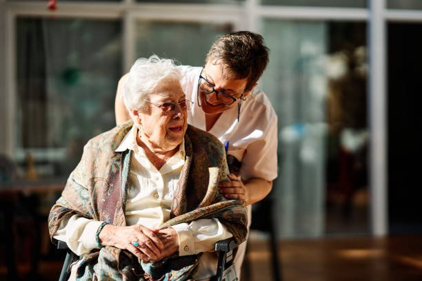

Salud comunitaria y recomendación de activos
Gran parte de lo que determina la salud de una persona está fuera del centro de salud: su vivienda, su trabajo, sus relaciones y su barrio. La salud comunitaria lleva a la enfermera a trabajar también con esos recursos.
Revisado en noviembre de 2026 · Fuentes al final de la página

Los tres niveles de la orientación comunitaria
- En la consulta: preguntar por el contexto de vida de la persona (con quién vive, cómo se mantiene, si se siente sola) y tenerlo en cuenta en el plan.
- Con grupos: educación para la salud grupal, por ejemplo para diabetes, deshabituación tabáquica, preparación al parto, cuidadoras o actividad física.
- Con la comunidad: participar con ayuntamiento, escuelas, entidades y vecinos en un diagnóstico de salud del barrio y en acciones conjuntas.
Activos para la salud y recomendación de activos
Un activo para la salud es cualquier recurso que mejora la salud y el bienestar: un grupo de caminatas, un huerto comunitario, un casal de gente mayor, un coro o un grupo de apoyo mutuo. El mapa de activos los recoge para que los profesionales los conozcan.
La recomendación de activos o prescripción social es el mecanismo formal para que, desde la consulta, la enfermera derive a una persona a uno de esos recursos y haga después el seguimiento. Encaja especialmente en:
- Soledad no deseada y aislamiento.
- Malestar emocional leve sin trastorno mental grave.
- Sedentarismo, sobrepeso, diabetes o hipertensión.
- Personas cuidadoras sobrecargadas.
En Cataluña lo impulsan el proyecto COMSalut y la red AUPA; en otras comunidades, estrategias propias de atención comunitaria.
Soledad no deseada
Se asocia a más mortalidad, depresión, deterioro cognitivo y uso de servicios. Conviene preguntar directamente («¿Se siente sola a menudo?»), sobre todo a mayores que viven solos, tras una viudedad o un alta. Las respuestas pasan por la red familiar, los recursos del barrio, la teleasistencia y el voluntariado.
Para empezar en un centro
- Conocer qué actividades hay ya en el barrio antes de crear otras nuevas.
- Pactar con el resto del equipo cómo se registra la recomendación.
- Evaluar con indicadores sencillos: personas derivadas, participación y satisfacción.
Fuentes
- Ministerio de Sanidad, Consumo y Bienestar Social. Marco Estratégico para la Atención Primaria y Comunitaria. Resolución de 26 de abril de 2019, BOE de 7 de mayo de 2019. www.boe.es
- Gobierno de Aragón. Guía de recomendación de activos para la salud en atención primaria. Estrategia de Atención Comunitaria; 2018. atencioncomunitaria.aragon.es
- Departament de Salut. Projecte COMSalut (Comunitat i Salut: atenció primària i comunitària) y Xarxa AUPA de salud comunitaria. Agència de Salut Pública de Catalunya. salutpublica.gencat.cat
- Asociación de Enfermería Comunitaria (AEC). Documentos de posicionamiento y competencias de la enfermera familiar y comunitaria. www.enfermeriacomunitaria.org